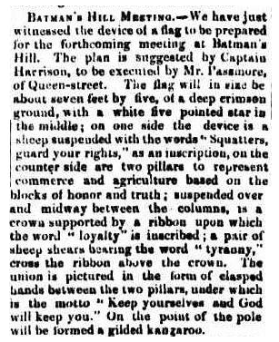
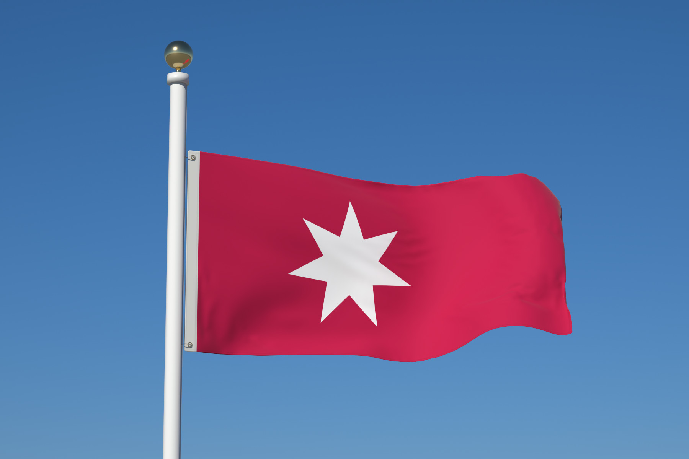
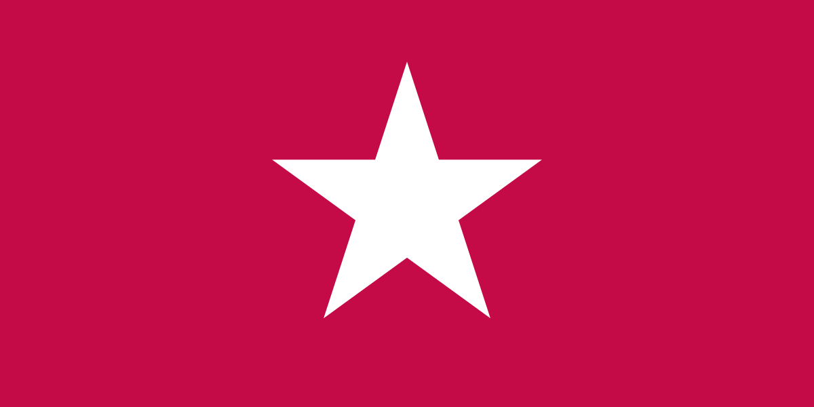
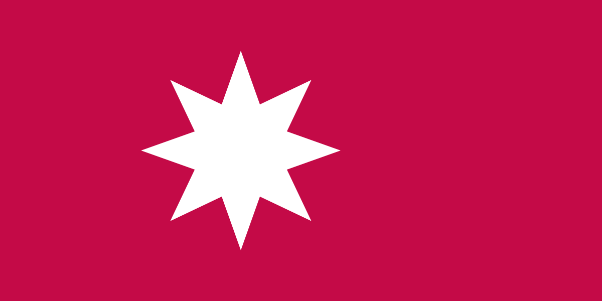
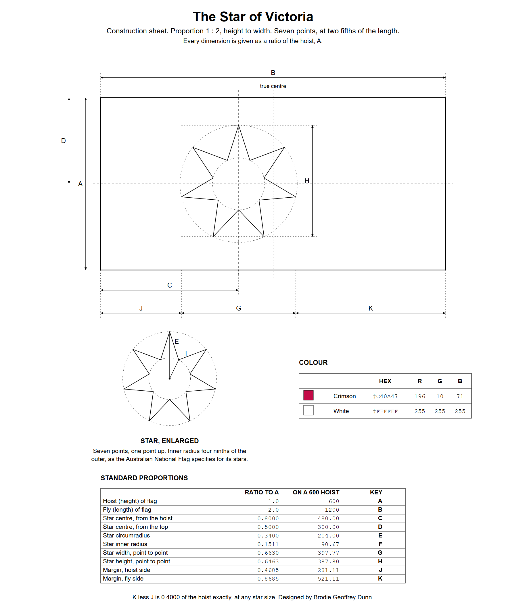
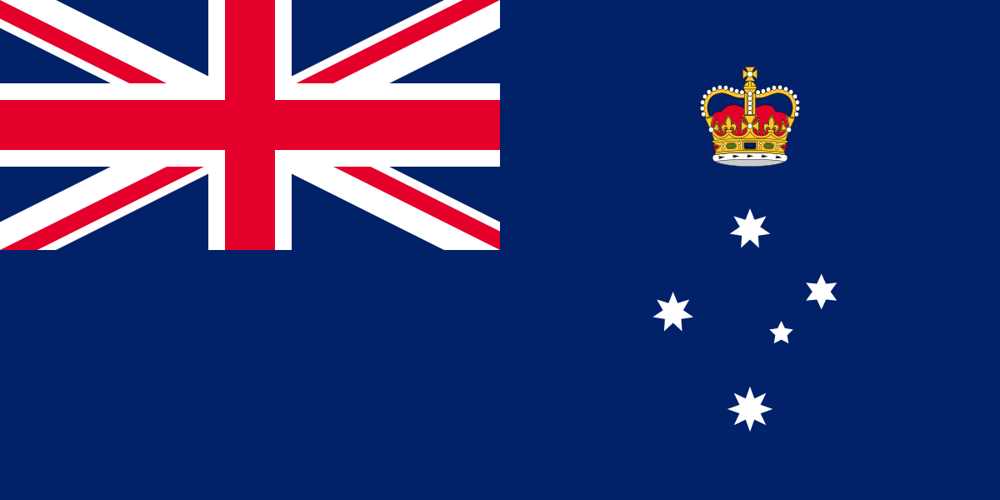
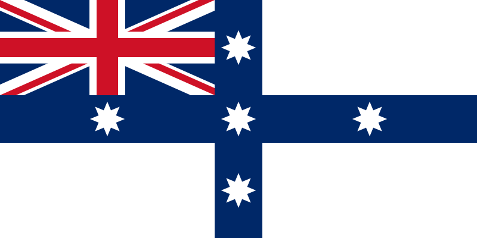
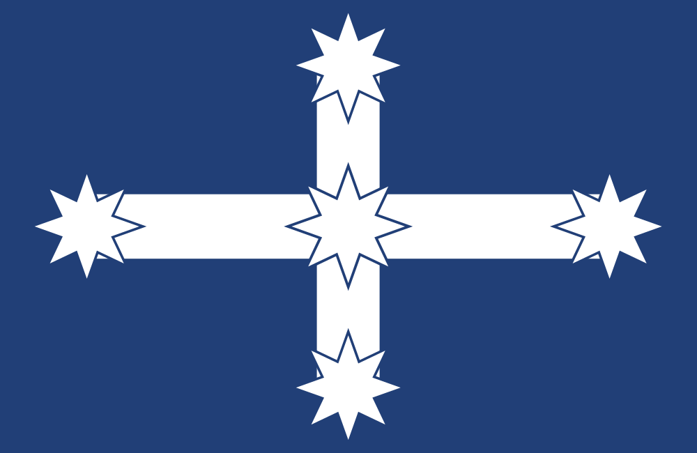

| Name | The Victorian Star |
|---|---|
| Use | State flag |
| Proportion | 1:2 |
| Status | Proposal, 2026 |
| Design | A crimson field with a white seven-pointed star, its centre two fifths of the length from the hoist. |
| Designed by | Brodie Geoffrey Dunn |
The Victorian Star is a proposed state flag for Victoria, Australia: a crimson field with a single white seven-pointed star, set toward the hoist. It takes the ground and the star of the flag of 1844, made for the Port Phillip District before it became Victoria.[1] The flag was put forward by its designer, Brodie Geoffrey Dunn, in 2026.
Justification
Union Jack
“The state flag of Victoria is a British Blue Ensign defaced by the state badge of Victoria in the fly.”[1] By tradition “the Union Jack occupies the upper quarter next the staff”.[1]
Blue Ensign
“The flags of the Australian states all bear the Union Jack on a dark blue background and each is distinguished by a state badge.”[2] Flags based on the Blue Ensign include those of Australia, all six states, Fiji, New Zealand, the Cook Islands and Tuvalu.[3] The form began at sea. W. G. Perrin, 1922: “By the Colonial Naval Defence Act of 1865 it became lawful for any colony, subject to certain conditions, to provide and maintain its own vessels of war, and these were authorised to wear the blue ensign with the seal or badge of the colony in the fly and a blue pendant.”[4]
Legislation
“Unlike the national flag, the flag of Victoria is not defined by legislation (either state or federal). As a result, there are no official legal requirements for the construction of the flag of Victoria.”[1] The Flags Act 1953 covers the Australian National Flag and the Australian Red Ensign, not the state flags.[5] New South Wales, Queensland and Western Australia legislated for their flags between 2004 and 2006;[6] Victoria, South Australia and Tasmania have not.
Badge
“The first flag of Victoria was adopted in 1870 and was first flown from HMVS Nelson on 9 February 1870. It too was a defaced British Blue Ensign with the Southern Cross located in the fly.”[1] Gazetted 4 February 1870.[7] In March 1877 the stars went onto a blue shield under an Imperial Crown, on a white disc;[8] in November the disc and shield were dropped and the crown kept.[9] “Victoria then adopted the current flag in 1877 with the stars of the southern cross from then on having 5, 6, 7, 7 and 8 points. In 1901, the lieutenant-governor advised the secretary of state that henceforth a St Edward’s Crown would be used on the now state flag.”[1]
Which crown is disputed. The Department of the Prime Minister and Cabinet: “In 1901, with the accession of Edward VII, this Crown was replaced with the Crown of St Edward and the flag has not changed since.”[10] The Victorian Government also gives St Edward’s Crown.[11] Provenance, the journal of Public Record Office Victoria, gives the Tudor Crown in 1901 and St Edward’s Crown from 1953.[12] Britannica dates the new crown to 19 September 1901, in use from 6 January 1904.[13]
Stars
The national flag’s stars were made uniform in 1903. “The design of the Southern Cross was simplified when the blue and red ensigns were gazetted in February 1903. The four main stars, which originally had different number of points to reflect their varying brilliance, all became seven-pointed stars.”[14] Victoria’s were not: “The white stars on the Victorian flag have differing sizes and numbers of points (from 5 to 8), to signify the brilliance of each star in the constellation of the Southern Cross and their varying brightness.”[10]
1844

“The Port Phillip District is an historical district that became the present state of Victoria, Australia.”[16] “In 1844, John Harrison, the father of H. C. A. Harrison, designed a flag for the Separation Society, an organisation advocating for the separation of the Port Phillip District (present-day Victoria) from the Colony of New South Wales. The flag, featuring ‘a white star centred on a crimson ground’, was flown at a large open-air meeting on Batman’s Hill in June 1844.”[1] The Port Phillip Gazette: “about seven feet by five, of a deep crimson ground, with a white five pointed star in the middle”, with a sheep, two pillars, a crown, sheep shears and a motto on its two faces.[15] The Victorian Star keeps the ground and the star.
Proposal



1. Five points, centred: the flag of 1844, made for the Port Phillip District.[1][16] An alternative for Port Phillip as well as for Victoria. Epsilon Crucis on the current flag has five.[17]


2. Seven points, as on the Commonwealth Star[18] and on Beta and Gamma Crucis of the current flag.[17] Proposed.

3. Eight points, as on Alpha Crucis, the brightest star of the Cross, on the current flag,[17] and on every star of the Eureka Flag.[19]


Colours
The designer describes it as a cultural flag, about family: mothers and fathers, their children, and the directions people take.
Crimson
Crimson signifies family, from mothers and fathers to their children.
The flag of 1844 was “of a deep crimson ground”.[1]
Star
The star signifies the directions people take, its points facing every way.
Victoria Police read their own star the same way: “the willingness of members to go in any direction to perform their duties”.[20] Theirs is a faceted five-pointed star, point down.
White
White signifies peace and unity, the ties that hold a family together.
Thomas Francis Meagher, on the Irish tricolour in 1848: “The white in the centre signifies a lasting truce between the ‘Orange’ and the ‘Green’”.[21]
Construction



| Proportion | 1:2, height to length |
|---|---|
| Field | Crimson |
| Star | One, white, one point up |
| Star width | 66.30% of the height, point to point, for all three counts |
| Star centre, proposals 2 and 3 | Two fifths of the length from the hoist (0.800 of the height), on the horizontal centre line; divides the flag 2:3 |
| Star centre, proposal 1 | Centred, as described in 1844 |
| Margin, hoist side | 0.4685 of the height |
| Margin, fly side | 0.8685 of the height; 0.4000 more than the hoist side |
| Five points | Circumradius 34.85% of the height; inner radius 0.382 of it |
| Seven points | Circumradius 34.00% of the height; inner radius 4/9 of it, as on the stars of the national flag[22] |
| Eight points | Circumradius 33.15% of the height; inner radius 1/2 of it |
| Crimson | #C40A47, RGB 196 10 71 |
| White | #FFFFFF, RGB 255 255 255 |
| Reverse | Mirror image of the obverse |
| Heading | 3 to 5% of the length |
| Drawn on | 1200 × 600, star centre at x = 480 |
Size
A star fills about a third of its bounding box: 32.6% at five points, 36.4% at seven, 38.3% at eight. A disc fills 78.5%. A star needs a bigger box than a disc to carry the same weight, and a 1:2 flag has a third more field than a 2:3 flag. At a circumradius of 34% of the hoist the seven-pointed star stands 0.646 of the height. Japan’s disc was set at “three-fifths of the hoist width”;[23] Bangladesh’s has “a radius of one-fifth of the length of the flag” on a flag of 10:6,[24] and Greenland’s is “eight parts in diameter” on a hoist of twelve,[25] both 0.667 of the height.
Position
Bangladesh: “The red circle is offset slightly toward the hoist so that it appears centred when the flag is flying.” Its centre is at “the nine-twentieth part of the length of the flag”, 45%.[24] Japan, 1870: “The law decreed the disc to be in the center, but it was usually placed one-hundredth (1⁄100) towards the hoist.”[23] Greenland’s disc is “horizontally offset by seven parts from the hoist to the centre of the circle” on a length of eighteen: 38.9%.[25] This star is at two fifths, 40%: further toward the hoist than an optical correction needs, and close to Greenland.
Tincture
“According to the rule of tincture, one of the fundamental rules of heraldic design, colour may not be placed on colour nor metal on metal.”[26] A white star on crimson keeps the rule without fimbriation. Silver, which heraldry draws as white, is one of Victoria’s two state colours.[10]
Reference
Current

Flag of Victoria (1877)
The flag this proposal would replace. Flags of the World: “There are 8,7,7,6 and 5 points for Alpha, Beta, Gamma, Delta and Epsilon Crucis respectively.”[17] All three counts proposed here are on it.
Image, public domain
.svg){kind=link}
Historic
The flag of 1844
Source of the ground and the star.
Described as “a white star centred on a crimson ground”.[1] The devices, the motto and the seven by five foot shape are not drawn.
Drawn by the designer from the description

Australian Federation Flag (1831)
“While the Federation Flag proved popular and was widely used on the East Coast of Australia for over 70 years, it was never officially adopted.”[27] Eight-pointed stars, as in proposal 3.
Image by User:Martyman, CC BY-SA 3.0


Eureka Flag (1854)
“The Eureka Flag was flown at the Battle of the Eureka Stockade, which took place on 3 December 1854 at Ballarat in Victoria”.[19] Eight-pointed stars, as in proposal 3.
Image, public domain

Sources
- ^ a b c d e f g h i j “Flag of Victoria (state)”, Wikipedia, revision of 23 February 2026. Text CC BY-SA 4.0. The flag of 1844, with the Port Phillip Gazette of 29 May 1844 as transcribed there; the current flag; its history from 1870; its construction, not defined by legislation.
- ^ “State and territory flags”, Australian flags. Department of the Prime Minister and Cabinet. Text CC BY 4.0. The design shared by all six state flags.
- ^ “Blue Ensign”, Wikipedia, revision of 28 September 2026. Text CC BY-SA 4.0. Flags based on the Blue Ensign.
- ^ W. G. Perrin, British Flags: Their Early History, and Their Development at Sea. Cambridge University Press, 1922. Chapter V, “Colours of Distinction”: the Colonial Naval Defence Act of 1865 and the blue ensign with a colony’s badge. Out of copyright.
- ^ Flags Act 1953 (Cth). Sections 3 and 4: the Australian National Flag and the Australian Red Ensign.
- ^ State Arms, Symbols and Emblems Act 2004 (NSW); Emblems of Queensland Act 2005 (Qld); State Flag Act 2006 (WA). The three states that legislated for their flags.
- ^ Victoria Government Gazette No. 10, 4 February 1870, p. 225. The first badge.
- ^ Victoria Government Gazette No. 32, 6 April 1877, p. 629. The badge on a white disc, proclaimed on 26 March 1877.
- ^ Victoria Government Gazette No. 119, 30 November 1877, p. 2233. The badge under a crown, proclaimed on 12 November 1877.
- ^ a b c “Symbols of Victoria”, Australian symbols. Department of the Prime Minister and Cabinet. Text CC BY 4.0. The crown of 1901; the state colours; the stars’ differing points.
- ^ “About the Victorian flag”, Victorian Government. The advice of 19 September 1901 that the crown would be St Edward’s Crown.
- ^ John Rogers, “The Crown and Kangaroo Victorian Flags”, Provenance, no. 11, 2012, Public Record Office Victoria. The Tudor Crown in 1901, St Edward’s Crown from 1953.
- ^ “Flag of Victoria”, Encyclopaedia Britannica. The new crown authorised on 19 September 1901 and in use from 6 January 1904.
- ^ “How the Australian National Flag was chosen”, Australian flags. Department of the Prime Minister and Cabinet. Text CC BY 4.0. The simplification of the Southern Cross in 1903.
- ^ a b “Domestic Intelligence”, Port Phillip Gazette, 29 May 1844, p. 2. Trove, National Library of Australia. The flag for the Batman’s Hill meeting described; the clipping is cut from this page, out of copyright.
- ^ a b “Port Phillip District”, Wikipedia, revision of 19 August 2026. Text CC BY-SA 4.0. The district that became Victoria.
- ^ a b c d “Victoria (Australia)”, Flags of the World. The point counts of the stars on the current flag.
- ^ “Commonwealth Star”, Wikipedia, revision of 12 August 2026. Text CC BY-SA 4.0. The seven-pointed Commonwealth Star.
- ^ a b “Eureka Flag”, Wikipedia, revision of 7 September 2026. Text CC BY-SA 4.0. The flag of 1854 and its eight-pointed stars.
- ^ “Victoria Police”, Flags of the World. The red of the badge and the meaning of its star, summarising the force’s website (Jonathan Dixon, 1 October 2008).
- ^ “Flag of Ireland”, Wikipedia, revision of 24 September 2026. Text CC BY-SA 4.0. Thomas Francis Meagher’s explanation of the white, April 1848.
- ^ “Flag of Australia”, Wikipedia, revision of 27 September 2026. Text CC BY-SA 4.0. Construction: “Each star’s inner diameter is 4⁄9 of the outer diameter.”
- ^ a b “Flag of Japan”, Wikipedia, revision of 24 September 2026. Text CC BY-SA 4.0. The proclamation of 1870: the disc three-fifths of the hoist, placed in practice one-hundredth toward the hoist.
- ^ a b “Flag of Bangladesh”, Wikipedia, revision of 7 September 2026. Text CC BY-SA 4.0. The disc offset toward the hoist; its radius and the position of its centre.
- ^ a b “Flag of Greenland”, Wikipedia, revision of 17 July 2026. Text CC BY-SA 4.0. 18 by 12 parts; the disc eight parts across, centred seven parts from the hoist.
- ^ “Fimbriation”, Wikipedia, revision of 13 December 2025. Text CC BY-SA 4.0. Fimbriation; the rule of tincture; the white fimbriation of the Union Flag.
- ^ “Australian Federation Flag”, Wikipedia, revision of 19 August 2026. Text CC BY-SA 4.0. The flag of 1831.
Rights
Copyright © 2026 Brodie Geoffrey Dunn. All rights reserved.
The Victorian Star was designed by Brodie Geoffrey Dunn. This work is copyright. Apart from any use as permitted under the Copyright Act 1968 (Cth), no part may be reproduced by any process without prior written permission from the designer. Requests and inquiries concerning reproduction and rights should be addressed to Brodie Geoffrey Dunn, brodie2015@icloud.com.
The designer’s moral rights are asserted: the right to be named as the designer, the right not to have the design credited to anyone else, and the right not to have it treated in a way that harms his honour or reputation (Copyright Act 1968, ss 193, 195AC, 195AI).
Quotations belong to their authors. Wikipedia text is quoted under CC BY-SA 4.0 and text from the Department of the Prime Minister and Cabinet under CC BY 4.0. Images under Reference carry the licence noted beside each.
Independent proposal. Not endorsed by the Government of Victoria. Not authorised by, endorsed by or connected with Victoria Police.